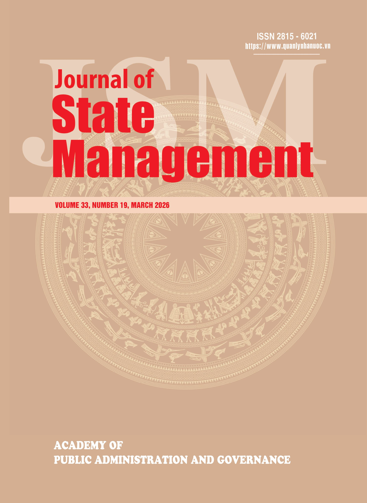

Digital transformation to construct an excellent public administration in Vietnam's new development era
Volume 33, Number 19, March 2026

Contents
Developing digital competencies for teachers in the context of comprehensive digital transformation in education and training in Vietnam
The impact of digital transformation on public service culture in state administrative agencies in Vietnam: opportunities, challenges, and policy implications
Completing the criteria for evaluating the governance effectiveness of commune-level People's Committees in Vietnam today
On the units "departments," "bureaus," and "institutes": from an international comparative perspective to administrative organization practice in Vietnam
Solutions for innovating approaches to mobilising ethnic minority communities under the two-tier local government model in Vietnam
Promoting the socialisation of archival activities in Vietnam today
State management of residence in the context of two-tier local government
The development of the private sector as a key driver of the economy: policy orientation and practical implications